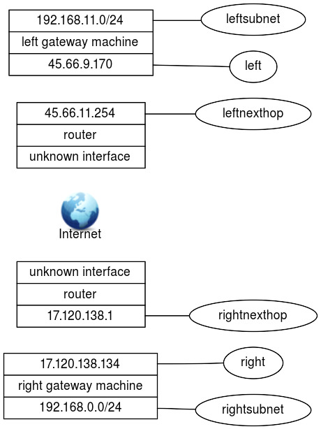

Advanced Network Configuration and Troubleshooting (205.2)
Advanced Network Configuration and Troubleshooting (205.2)¶
The candidate should be able to configure a network device to implement various network authentication schemes. This objective includes configuring a multi-homed network device, configuring a virtual private network and resolving networking and communication problems.
Key Knowledge Areas¶
-
Utilities to manipulate routing tables
-
Utilities to configure and manipulate ethernet network interfaces
-
Utilities to analyse the status of the network devices
-
Utilities to monitor and analyse the TCP/IP traffic
Terms and Utilities¶
-
/sbin/route -
/sbin/ifconfig -
/bin/netstat -
/bin/ping -
/bin/ping6 -
/usr/sbin/traceroute -
/usr/sbin/traceroute6 -
/usr/sbin/arp -
/usr/sbin/tcpdump -
/usr/sbin/lsof -
/usr/sbin/ss -
/usr/bin/nc -
/usr/bin/mtr -
/sbin/ip -
nmap -
wireshark
Virtual Private Network¶
What Is A VPN¶
A VPN (Virtual Private Network) allows you to connect VPN two or more remote networks securely over an insecure connection, for example over the public Internet. To do this an encrypted secure tunnel is created: all data will be encrypted before being tunnel sent over the insecure network. The resulting network connection acts and feels like a physical connection, but actually may traverse many physical networks and systems. Hence its name: \"virtual\".
VPNs are frequently used to save costs. In olden days physical connections had to be leased from telecom providers or you had to use POTS or ISDN lines. This was a costly business. Nowadays the Internet is omnipresent, and almost always available at a low fixed monthly price. However, the Internet can be sniffed and intruders might inspect and/or intercept your traffic. A VPN shields you from most of the problems you might have otherwise.
A use case might be to integrate LANs in several offices or branches. A user that works in the Los Angeles office hence can access the network services of the department in New York vice versa. In most cases, offices already have an Internet connection, so no additional investments need to be made.
VPN Types¶
There are many ways to implement a VPN, although most solutions either use IPSEC or SSL/TLS as their basis for encryption. Some companies use proprietary software implementations. Many routers have IPSEC based VPN support built in. A usable VPN can be built using a simple SSH SSH tunnel or by using a more sophisticated dedicated solution. Some VPN implementations include:
-
IPSEC
-
VPND
-
SSH
-
Many Cisco Routers (or other proprietary implementations)
-
SSL/TLS
This book will outline the implementations of OpenVPN and IPSEC. ??? is covered separately in the chapter on System Security. IPSEC
IPSEC¶
IPSEC provides encryption and authentication services at the IP (Internet Protocol) level of the IPSEC network protocol stack. It replaces/enhances the regular level 3 IP layer so all packets are encrypted, including for example UDP packets. The IPSEC layer has been standardized by the IETF in RFCs 2401--2412. Implementing IPSEC is an option for IPv4 but is mandatory in IPv6 stacks.
In a regular IPv4 network you might set up dedicated IPSEC gateway machines to provide encrypted IP network connections when needed. IPSEC can run on routers, firewall machines, various application servers and on end-user desktop or laptop machines - any system that has an IP stack.
Using IPSEC is simple, as the protocol is built-in into the IP stack. But there are additional tasks in comparison with a regular IPv4 connection, for example encryption keys need to be exchanged between the end-points before an encrypted tunnel can be set up. It was decided to handle this over a higher-level protocol, the Internet Key Exchange protocol IKE (IKE). After IKE has done its work, the IP level services ESP and AH know which keys to use to do their work.
The full names of the three protocols that are used in an IPSEC implementation are:
ESP, Encapsulating Security Payload
- Encrypts and/or authenticates data;
AH, Authentication Header
- Provides a packet authentication service;
IKE, Internet Key Exchange
- Negotiates connection parameters, including keys, for the protocols mentioned above. The IKE protocol ensures authentication of the peers and exchange of their symmetric keys. The IKE protocol is usually implemented by a user space daemon that uses port 500/udp.
Note IPSEC standards define all three protocols, but in some contexts people use the term IPSEC to refer to just AH and ESP.
OpenSwan, formerly known as FreeS/WAN, is a complete IPSEC implementation for Linux 2.0 - 2.6 kernels. StrongSwan (also derived from FreeS/WAN) is another implementation that also supports the 3.x kernel. Both OpenSwan and FreeSwan implement all three protocols mentioned earlier. The Openswan Openswan implementation has several main parts:
-
KLIPS (KerneL IPSec) which implements generic IPSEC packet handling, AH and ESP on the kernel level, for all kernels before version 2.5.47. KLIPS has been superseded by native IPSEC kernel support (NETKEY).
-
NETKEY is the Kernel IPSec implementation included with the 2.6 kernel.
-
Pluto (an IKE daemon) implements IKE, negotiating connections with other systems.
-
various scripts provide an administrator interface to the machinery.
The config file¶
The config file contains three parts:
-
one or more connection specifications
- Each connection section starts with
conn ident, whereidentis an arbitrary name which is used to identify the connection.
- Each connection section starts with
-
connection defaults
- This section starts with
conn %default. For each parameter in it, any section which does not have a parameter of the same name gets a copy of the one from the%defaultsection. There may be multiple %default sections, but only one default may be supplied for any specific parameter name and all%defaultsections must precede all non-%defaultsections of that type.
- This section starts with
-
the config section
- The config section starts with
config setupand contains information used Configuring Openswan when starting the software.
- The config section starts with
A sample configuration file is shown below:
1 2 3 4 5 6 7 8 9 10 11 12 13 14 15 16 17 18 19 20 21 22 23 24 25 26 27 28 29 30 31 32 33 | |
In a typical setup you have two interconnected gateways that both run
IPSEC and route packets. One of these gateways can be seen as 'the one
on the left', the other as 'the one on the right'. Hence
specifications are written in terms of left and right participants.
There is no special meaning attached to either name, they are just
labels - you might have defined the 'left' host to be the 'right'
host and vice versa.
Normally, you would use the exact same configuration file on both sides. Interpretation of that file is done by checking the local configuration. For example if it was stated in the configuration file that the IP address for 'left' is 1.2.3.4, the software assumes that it runs on the left node if it finds that IP address configured on one of its network devices. The same file is interpreted differently on the other node, as that hosts configuration differs.
The left, leftsubnet and leftnexthop (and the right...
counterparts) determine the layout of the connection:

The leftid and leftrsasigkey are used in authenticating the left
participant. The leftrsasigkey is the public key of the left
participant (in the example above the RSA keys are shortened for easy
display). The private key is stored in the /etc/ipsec.secrets file and
should be kept secure.
The keys can be generated on both client and server with the command:
1 | |
The IKE-daemon of IPSEC is called pluto. It will authenticate and
negotiate the secure tunnels. Once the connections is set up, the kernel
implementation of IPSEC routes traffic through the tunnel if need be.
plutoload=%search and plutostart=%search tell the pluto daemon to
search the configuration file for auto= statements. All connections
with auto=add will be loaded in the pluto database. Connections with
auto=start will also be started.
Troubleshooting
Network troubleshooting is a very broad subject with thousands of tools available. There are some very good books available on this topic, so we will limit our discussion to an overview of some of the tools which can be used to solve or detect network problems.
ifconfig¶
Typing ifconfig without additional parameters displays the
configuration for all network interfaces ifconfig on the system. You
might use this command to verify the configuration of an interface if
the user experiences connectivity problems, particularly when their
system has just been (re)configured.
When ifconfig is entered with an interface name and no other
arguments, it displays the current values assigned to that particular
interface. For example, checking interface eth0 system gives this
report:
1 2 3 4 5 6 7 8 9 | |
The ifconfig command displays a few lines of output. The third line of the display shows the characteristics of the interface. Check for these characteristics:
UP
- The interface is enabled for use. If the interface is "down", bring
the interface "up" with the
ifconfigcommand (e.g.ifconfig eth0 up).
RUNNING
- This interface is operational. If the interface is not "running", the driver for this interface may not be properly installed.
The second line of ifconfig output shows the IP address, the subnet
mask and the broadcast address. Check these three fields to make sure
the network interface is properly configured.
Two common interface configuration problems are misconfigured subnet
masks and incorrect IP addresses. A bad subnet mask may be the case when
the host can reach some hosts on its local subnet but is unable to reach
other hosts, even if they are on the same subnet. ifconfig quickly
reveals if a bad subnet mask is set.
An incorrectly set IP address can be a subtle problem. If the network
part of the address is incorrect, every ping will fail with the "no
answer" ping error; because the IP address is unfamiliar to the other
hosts on the network, return packets will be directed to their default
gateway (often leading to the internet) or even dropped. In this case,
using ifconfig may reveal the incorrect address. However, if the host
part of the address is wrong, the problem can be more difficult to
detect. A small system, such as a PC that only connects out to other
systems and never accepts incoming connections, can run for a long time
with the wrong address without its user noticing the problem.
Additionally, the system that suffers the ill effects may not be the one
that is misconfigured. It is possible for someone to accidentally use
your IP address on his own system and for his mistake to cause
intermittent communication problems to your system. This type of
configuration error cannot be discovered by ifconfig, because the
error is on a remote host. IP conflicts like this can be discovered
using the arp command, which will show two alternating MAC addresses
for the same IP address. arp
The ifconfig command can be used to set up multihomed network device.
There are two ways a host can be multihomed.
-
Two Or More Interfaces To The Same Network
- Devices such as servers or high-powered workstations may be equipped with two physical interfaces to the same network for performance and/or reliability reasons. They will have two IP addresses on the same network with the same network ID.
-
Interfaces To Two Or More Different Networks
- Devices may have multiple interfaces to different networks. The IP addresses will typically have different network IDs in them.
ping and ping6¶
ping6 The basic format of the ping or ping6 command on a Linux system is:
1 2 | |
host
- The hostname or IP address of the remote host being tested. Note that you cannot ping from an IPv4 host to an IPv6 host or vice versa. Both ends need to use the same IP version.
count
- The number of packets to be sent in the test. Use the count field and set the value low. Otherwise, the ping command will continue to send test packets until you interrupt it, usually by pressing [CTRL+C]{.keycombo} (^C).
To check that www.sue.nl can be reached from your workstation, send four packets with the following command.
1 2 3 4 5 6 7 8 9 10 | |
This test shows a good wide-area network link to www.sue.nl with no packet loss and fast response. A small packet loss, and a round-trip time an order of magnitude higher, would not be abnormal for a connection made across a wide-area network. The statistics displayed by the ping command can indicate a low-level network problem. The key statistics are:
-
The sequence in which the packets are arriving, as shown by the ICMP sequence number (icmp_seq) displayed ICMP for each packet;
-
How long it takes a packet to make the round trip, displayed in milliseconds after the string time=;
-
The percentage of packets lost, displayed in a summary line at the end of the ping output.
If the packet loss is high, the response time is very high or packets are arriving out of order, there could be a network hardware or link problem. If you see these conditions when communicating over great distances on a wide area network, there is nothing to worry about. TCP/IP was designed to deal with unreliable networks, and some wide-area networks suffer from a moderate level of packet loss. But if these problems are seen on a local-area network, they indicate trouble.
On a local-network cable segment, the round-trip time should be close to zero; there should be little or no packet loss and the packets should arrive in order. If these conditions are not met, there is a problem with the network hardware or with the links connecting them. On an Ethernet, the problem could be improper cable termination, a bad cable segment or a bad piece of "active" hardware, such as a hub, switch or transceiver.
The results of a simple ping test, even if the ping is successful, can help direct you to further testing toward the most likely causes of the problem. But other diagnostic tools are needed to examine the problem more closely and find the underlying cause.
route¶
To check the routing of a linux box, the route command is usually
entered with no route parameters or with -n to turn off ip-address to
name resolution. For example route -n might show:
1 2 3 4 5 6 | |
This host has two interfaces, one on subnet 192.168.11.0/24 the other on
subnet 145.66.8.0/22. There is also a default route out on eth1 to
145.66.11.254 (denoted by the G under "Flags" and a "Destination" and
"Genmask" of 0.0.0.0).
To be able to troubleshoot this information you need to know what the routing should be, perhaps by saving the routing information when the system is known to work.
The two most common mistakes are:
-
No network entry for an interface. When a network interface is configured a routing entry should be automatically added. This informs the kernel about the network that can be reached through the interface.
-
No default route (or two default routes). There should be exactly one default route. Note that two default gateways can go undetected for a long time because the routing could "accidentally" use the proper gateway.
In general, if there is a routing problem, it is better to first locate
the part of the network where the problem originates, e.g. with ping
or traceroute and then use traceroute route as part of
the diagnostics.
traceroute¶
traceroute and traceroute6 are tools used to discover the gateways
along a path. Path discovery is an essential step in diagnosing routing
problems. Note that traceroute6 is equivalent to traceroute -6
The traceroute command is based on a clever use of the Time-To-Live
(TTL) field in the IP packet's TTL header. The TTL field is used to
limit the lifetime of a packet. When a router fails or is misconfigured,
a routing loop or circular path may result. The TTL field prevents
packets from remaining on a network indefinitely should such a routing
loop occur. A packet's TTL field is decremented each time the packet
crosses a router on its way through a network. When its value reaches 0,
the packet is discarded rather than forwarded. When discarded, an ICMP
TIME_EXCEEDED TIME_EXCEEDED message is sent back to the packet's
source to inform the source that the packet was discarded. By
manipulating the TTL field of the original packet, the program
traceroute uses information from these ICMP messages to discover paths
through a network.
traceroute sends a series of UDP packets with the destination address
of the device you want a path to. By default, traceroute sends sets of
three packets to discover each hop. traceroute sets the TTL field in the
first three packets to a value of 1 so that they are discarded by the
first router on the path. When the ICMP TIME_EXCEEDED messages are
returned by that router, traceroute records the source IP address of
these ICMP messages. This is the IP address of the first hop on the
route to the destination.
Next, three packets are sent with their TTL field set to 2. These will
be discarded by the second router on the path. The ICMP messages
returned by this router reveal the IP address of the second router on
the path. The program proceeds in this manner until a set of packets
finally has a TTL value large enough so that the packets reach their
destination. Most implementations of traceroute default to trying only
30 hops before halting.
An example traceroute on linux looks like this:
1 2 3 4 5 6 7 8 9 10 11 12 13 | |
Again, knowing what the route through your network should be helps to
localize the problem. Note that not all network problems can be detected
with a traceroute, because of some complicating factors. First, the
router at some hop may not return ICMP TIME_EXCEEDED messages. Second,
some older routers may incorrectly forward packets even though the TTL
is 0. A third possibility is that ICMP messages may be given low
priority and may not be returned in a timely manner. Finally, beyond
some point of the path, ICMP packets may be filtered by a firewall.
The traceroute command is a great tool to narrow down the possible
causes of a network problem.
arp and arpwatch¶
arp is used to manipulate the kernel's arp arpwatch ARP cache. The
primary options are clearing an address mapping entry and manually
setting one up. For debugging purposes, the arp program also allows a
complete dump of the ARP cache. ARPcache
If you know what the MAC address of a specific host should be, the dump
may be used to determine a duplicate IP-address, but running arpwatch
on a central system might prove more effective.
IP address conflicts are often the result of configuration errors including:
-
assignment of the same static IP address by a network administrator
-
assignment of a static IP address within a DHCP range (dynamic range) resulting in the same address being automatically assigned by the local DHCP server
-
an error in the DHCP server
-
a system coming back online after an extended period in stand-by or hibernate mode with an IP address that has been reassigned and is in use on the network.
Detection of duplicate IP addresses can be very hard even with
arpwatch. IP address conflicts occur when two devices on a network are
assigned the same IP address, resulting in one or both being disabled
and losing connectivity until the conflict is resolved.
If, for example, a rogue host rogue host uses the IP address of the host
running the arpwatch program or never communicates with it, a
duplicate IP address will go unnoticed. Still, arpwatch is a very
useful tool in detecting networking problems.
arpwatch keeps track of ethernet/IP address pairings. Changes are
reported via syslog and e-mail.
arpwatch will report a "changed ethernet address" when a known IP
address shows up with a new ethernet address. When the old ethernet
address suddenly shows up again, a "flip flop" is reported.
tcpdump¶
tcpdump is a program that enables network tcpdump administrators to
inspect every packet going through the network in real-time. This tool
is typically used to monitor active connections or troubleshoot
occasional network connectivity problems. In order to see traffic,
however, the host running tcpdump must be somewhere along the path
between two (or more) hosts exchanging traffic. This may prove to be
difficult in a fully switched network. An easy solution is to run
tcpdump on the host that needs to send or receive traffic. Another
option is to configure a port on one of the switches where a copy of
traffic from certain source and destination ports is sent; this is
called a SPAN port.
tcpdump can generate a lot of output, so it is useful to narrow the
scope of packets captured by specifying the interface you want to listen
on using -i. In addition, you can specify the source, destination,
protocol type and/or port number of the traffic you want to see joined
by boolean AND and OR statements if necessary. An example command could
be: tcpdump -i eth0 src 10.10.0.1 and dst 10.10.0.254
and tcp port 80). Other useful options are -n to turn
of name resolution and -w to write captured packets to a file for
later inspection (e.g. in Wireshark).
nmap¶
nmap is a versatile tool for network exploration and security
auditing. Its main use is as a portscanner, which also can identify
running services, versions of the running services and OS types.
An example of this command and output is:
1 2 3 4 5 6 7 8 9 10 11 12 13 14 15 16 17 18 19 20 21 22 23 24 25 26 27 28 29 30 31 32 33 34 35 36 37 38 39 40 41 42 43 44 45 46 47 | |
Note
Some of the nmap command options require root privileges, consult the
NMAP(1) manpage for more information
wireshark¶
Wireshark is an open source network protocol analyzer. It allows you to examine data from a live network or from a capture file on disk. You can interactively browse the capture data, delving down into just that level of packet detail you need.
Wireshark has several powerful features, including a rich display filter language and the ability to view the reconstructed stream of a TCP session. It also supports hundreds of protocols and media types. A tcpdump-like console version named tethereal is also included. One word of caution is that Ethereal has suffered from dozens of remotely exploitable security holes, so stay up-to-date and be wary of running it with root privileges on untrusted or hostile networks (such as security conferences).
lsof¶
The lsof command lists all open files on a system. Since Linux
treats everything as a file, it also shows open network sockets. It can
be used to find open ports on a system as well as determining the origin
of a network connection.
Options of the lsof used for network troubleshooting.
-i
- List IP sockets. The
-ioption also takes arguments to restrict the sockets listed, like-itcpor-i192.168.1.2.
-n
- Do not resolve hostnames; can make
lsofrun faster.
-P
- Do not resolve port names; can make
lsofrun faster.
+P
- Resolve port name to protocol; default behaviour.
ss¶
The ss command can be used to investigate network sockets on a
system, similar to netstat.
Useful options of the ss for network troubleshooting include:
-a
- List all sockets. This includes sockets in listening state.
-n
- Do not resolve port names.
-l
- Only display listening sockets.
-p
- Show processes using the sockets
-t
- Restrict output to TCP sockets
-u
- Restrict output to UDP sockets
netstat¶
Like lsof, netstat is a program to list open ports on a
system. It looks for the standard ports, but it also finds custom ports
opened by applications, for instance netcat.
Frequently used options are:
-a
- List all sockets.
-e
- Extended mode.
-inet
- List only IP connections
-l
- Only show listening sockets
-n
- Show IP numbers instead of resolving them to hostnames.
-p
- Show the PID number and name of the process that is holding the socket.
-r
- Show the kernel routing table. Is the same as the
routecommand.
nc¶
nc is used for establishing TCP and UDP connections between
arbitrary ports on either end. After opening a port, it can listen for
input, which can be passed through to another command for further
processing. Note that you need to have administrative privileges on the
system you're running this command on for opening a listening port
below 1024. The command allows the user to set up, analyze and read
connections between systems. It is a very useful tool in the
troubleshooting toolbox. nc can be used to open up any port.
Because nc is capable of connecting and listening to any port it can
be used to transfer files between systems that lack Samba, FTP or SSH
etc.
if nmap is not available the nc command can be used to check for
open ports: Run nc command with -z flag. You need to specify host name /
ip along with the port range to limit and speedup operation. eg.
1 | |
mtr¶
The mtr command is extremely helpful for troubleshooting network problems,
because it combines the functionality of ping and traceroute. Rather
than provide a simple outline of the route that traffic takes across the
internet like traceroute, mtr collects additional information regarding
the state, connection, and responsiveness of the intermediate hosts.
mtr can be used without any options. Just type: mtr>
host to get a visual display of the path between you
and the host and per-hop statistics. Like ping, mtr will continue to
send ICMP packets indefinitely by default. Useful options are:
-n
- Do not reverse resolve IP addresses to hostnames
-c count
- Send count number of probe packets, then stop
ip¶
The ip command has already been discussed in the previous chapter.